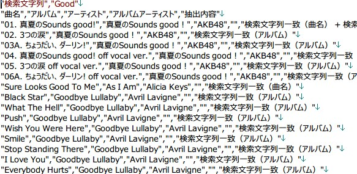

メンテナンス
１．検索する項目を選択して下さい。
[検索する曲のファイルを作成]、[検索する曲のプレイリストを作成]にて、
アルバム名、アーティスト名、アルバムアーティスト名、曲名、アートワークの
項目を検索対象にする場合はチェックを入れます。
２．設定されていない項目を検索する（正規表現使用可）
１．のチェックボックスでチェックがついている項目に対して、
未設定の項目が含まれている曲を抽出することが出来ます。
３．抽出対象（チェックボックス）の文字列を含む項目を検索します。
１．のチェックボックスでチェックがついている項目に対して、
検索する文字列を入力することが出来ます。
４．[選択]ボタン
[検索する曲のファイルを作成]にて、出力されるCSVファイルの出力先を指定出来ます。
５．[検索する曲のファイルを作成]ボタン
項番１、２、３、の条件に満たした曲の一覧ファイルが出力されます。
例） アルバム名 ✔、アーティス卜名 ✔、曲名 ✔ 、設定されていない項目を検索する ✔、検索対象文字列「Good」
・設定項目
・ファイル名
・CSV詳細

６．[検索する曲のプレイリストを作成]ボタン
項番５と同じ曲がプレイリストに作成されます。※検索条件が項目５と同じ場合
・プレイリスト結果
７．[存在しないファイルを削除]ボタン
リンクが切れている曲を一括に削除することが出来ます。
ログフォルダにて削除した曲情報とパスが確認出来ます。
８．[重複曲を検索]ボタン
曲名が重複している曲の一覧をプレイリストに作成出来ます。
９．[iTunesのアートワークをバックアップ]ボタン
アルバムに設定されているアートワークをバックアップすることが出来ます。
設定機能についてはこちらを